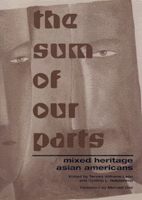

A groundbreaking look at mixed-heritage Asian Americans
A groundbreaking look at mixed-heritage Asian Americans


 A groundbreaking look at mixed-heritage Asian Americans
A groundbreaking look at mixed-heritage Asian Americans

|  |
The Sum of Our PartsMixed-Heritage Asian Americansedited by Teresa Williams-Le�n and Cynthia L. Nakashima, foreword by Michael Omipaper EAN: 978-1-56639-847-3 (ISBN: 1-56639-847-9) |
"The Sum of Our Parts is the first collection of essays on multiracial and multiethnic Asian Americans by experts in the field. The book is timely and will make an important contribution to the discourse on race, ethnicity, and identity formation. Comprehensive, historical, diasporic, and theoretically grounded, it includes groups not covered anywhere else, and will appeal to both academic and popular audiences."
—Judy Yung, University of California, Santa Cruz
Largely as a result of multiracial activism, the US Census for 2000 offers people the unprecedented opportunity to officially identify themselves with more than one racial group. Among Asian-heritage people in this country and elsewhere, racial and ethnic mixing has a long but unacknowledged history. According to the last US Census, nearly one-third of all interracial marriages included an Asian-descent spouse, and intermarriage rates are accelerating. This unique collection of essays focuses on the construction of identity among people of Asian descent who claim multiple heritages.
In the U.S., discussions of race generally center on matters of black and white; mixed heritage Asian Americans usually figure in conversations about race as an undifferentiated ethnic group or as exotic Eurasians. The contributors to this book disrupt the standard discussions by considering people of mixed Asian ethnicities. They also pay particular attention to non-white multiracial identities to decenter whiteness and reflect the experience of individuals or communities who are considered a minority within a minority. With an entire section devoted to the Asian diaspora, The Sum of Our Parts suggests that questions of multiracial and multiethnic identity are surfacing around the globe. This timely and provocative collection articulates them for social scientists and students.
Excerpt available at www.temple.edu/tempress
"This book begins to remedy a crucial absence in contemporary liberatory discussion—Asian identities, and multiracial Asian identities. It should be an important and welcome contribution, academically and beyond."
—Naomi Zack, Professor of Philosophy, University at Albany, SUNY
"This collection of essays focuses on the construction of identity among people of
Asian descent who claim multiple racial heritages. In the year 2000, for the first time in US history, the government's census allowed people the option of officially categorizing themselves in more than one racial group. According to this census, nearly one-third of all interracial marriages in the USA included an Asian-descent spouse. This book is divided into four sections: an examination of the history of multiraciality and Asian America; socio-cultural narratives of family and identity; analyses of political implications of multiracial identities; and an exploration of Asian-descent multiraciality, globally."
—SAGE Race Relations Abstracts
"These critical and provocative essays analyzing how multiracial identities have been constructed not just in the US but in a global context explore the multiple meanings accorded that identity from a variety of disciplinary perspectives, with a social science emphasis....A contribution to studies of race and ethnicity, as well as to Asian American studies, this collection is highly recommended..."
—Choice
"...a stellar interdisciplinary anthology....It not only fills the gap in the extant literature, but also furthers our understanding of the multiracial experience..."
—The Journal of the West
Foreword – Michael Omi
Acknowledgments
Introduction: Reconfiguring Race, Rearticulating Ethnicity – Teresa Williams-Le�n and Cynthia L. Nakashima
Part I: Multiraciality and Asian America: Bridging the Hybrid Past to the Multiracial Present
1. Who Is an Asian? Who Is a Pacific Islander? Monoracialism, Multiracial People, and Asian American Communities – Paul Spickard
2. Possibilities of a Multiracial Asian America – Yen Le Espiritu
3. Servants of Culture: The Symbolic Role of Mixed-Race Asians in American Discourse – Cynthia L. Nakashima
4. "The Coming of the Neo-Hawaiian American Race": Nationalism and Metaphors of the Melting Pot in Popular Accounts of Mixed-Race Individuals – John Chock Rosa
Part II: Navigating Sociocultural Terrains of Family and Identity
5. Factors Influencing the Variation in Racial and Ethnic Identity of Mixed-Heritage Persons of Asian Ancestry – Maria P. P. Root
6. Alaska�s Multiracial Asian American Families: Not Just at the Margins – Curtiss Takada Rooks
7. The Diversity of Biracial Individuals: Asian-White and Asian-Minority Biracial Identity – Christine C. Iikima Hall and Trude I. Cooke Turner
8. Black, Japanese, and American: An Asian American Identity Yesterday and Today – Michael C. Thornton and Harold Gates
Part III: Remapping Political Landscapes and Communities
9. A Rose by Any Other Name: Names, Multiracial/Multiethnic People, and the Politics of Identity – Daniel A. Nakashima
10. Multiracial Comedy as a Commodity in Hawaii – Darby Li Po Price
11. Doing the Mixed-Race Dance: Negotiating Social Spaces Within the Multiracial Vietnamese American Class Typology – Kieu Linh Caroline Valverde
12. The Convergence of Passing Zones: Multiracial Gays, Lesbians, and Bisexuals of Asian Descent – Teresa Williams-Le�n
13. Mirror, Mirror, on the Wall: Mapping Discussions of Feminism, Race, and Beauty in Japanese American Beauty Pageants – Rebecca Chiyoko King
14. Mixed but Not Matched: Multiracial People and the Organization of Health Knowledge – Cathy J. Tashiro
Part IV: Asian-Descent Multiraciality in Global Perspective
15. "We Paved the Way": Exemplary Spaces and Mixed Race in Britain – David Parker
16. A Dutch Eurasian Revival? – Mark Taylor Brinsfield
17. Multiethnic Lives and Monoethnic Myths: American-Japanese Amerasians in Japan – Stephen Murphy-Shigematsu
18. The Racial Politics of Being Dogla and of "Asian" Descent in Suriname – Loraine Y. Van Tuyl
19. The Tiger and His Stripes: Thai and American Reactions to Tiger Woods�s (Multi-) "Racial Self" – Jan R. Weisman
Bibliography
About the Contributors
Teresa Williams-Le�n is an Assistant Professor of Asian American Studies at California State University, Northridge.
Cynthia L. Nakashima is a Ph.D. candidate in Comparative Ethnic Studies at University of California, Berkeley.
Asian American History and Culture, edited by K. Scott Wong, Linda Trinh V�, and Cathy Schlund-Vials.
Founded by Sucheng Chan in 1991, the Asian American History and Culture, series has sponsored innovative scholarship that has redefined, expanded, and advanced the field of Asian American studies while strengthening its links to related areas of scholarly inquiry and engaged critique. Like the field from which it emerged, the series remains rooted in the social sciences and humanities, encompassing multiple regions, formations, communities, and identities. Extending the vision of founding editor Sucheng Chan and emeriti editor Michael Omi and David Palumbo-Liu, series editors K. Scott Wong, Linda Trinh V�, and Cathy Schlund-Vials continue to develop a foundational collection that embodies a range of theoretical and methodological approaches to Asian American studies.
© 2015 Temple University. All Rights Reserved. This page: http://www.temple.edu/tempress/titles/1454_reg.html.